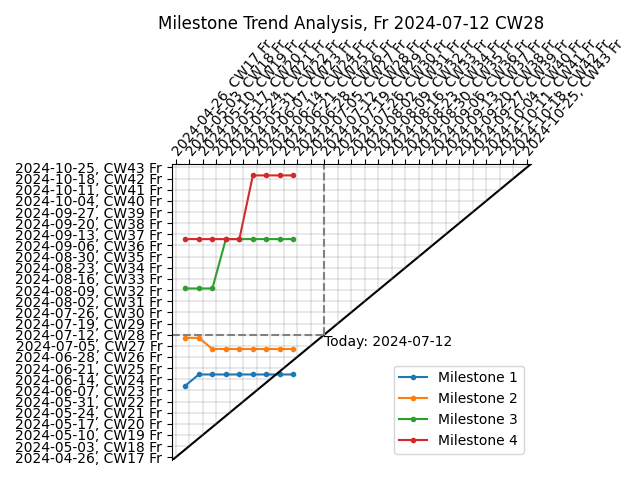
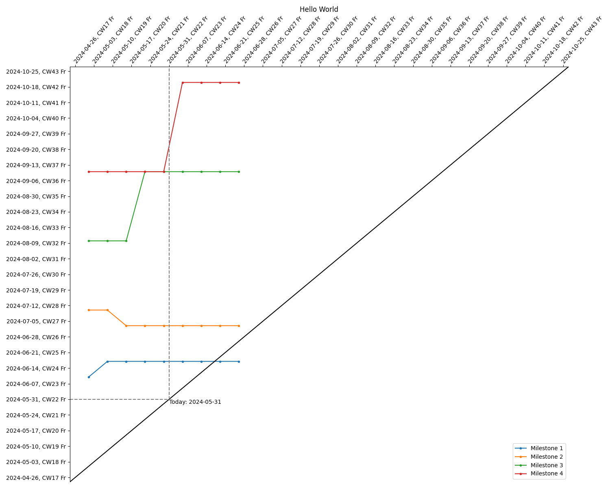

Milestone Trend Analysis (MTA) is a project management tool tracking milestones at regular reporting dates to detect project delays early. For example, It was also used NASA’s Ranger programm, see this report on page 376. MTA can be a useful tool to communicate project status and progress with management. To perform MTA myself, I wrote this python function that creates the typical MTA visualization from a pandas dataframe using matplotlib:
from typing import List
import pandas as pd
import datetime as dt
import matplotlib.pyplot as plt
import matplotlib.dates as mdates
def mta_plot(
df: pd.DataFrame,
cols: List[str] = None,
title: str = None,
grid: bool = True,
today_indicator: dt.date = None,
xdate_locator: mdates.DateLocator = None,
ydate_locator: mdates.DateLocator = None,
xdate_formatter: mdates.DateFormatter = None,
ydate_formatter: mdates.DateFormatter = None,
**fig_kw,
) -> plt.Figure:
"""Milestone Trend Analysis Plot"""
if cols is None:
cols = ["Milestone", "Report date", "Estimated end date"]
col_label, col_report_date, col_end_date = cols
df[[col_report_date, col_end_date]] = df[[col_report_date, col_end_date]].apply(pd.to_datetime)
# create empty figure with axes
fig, ax = plt.subplots(1, 1, **fig_kw)
# setup axis tick format for dates
default_date_locator = mdates.WeekdayLocator(byweekday=4)
default_date_formatter = mdates.DateFormatter("%Y-%m-%d, CW%V %a")
if xdate_locator is None:
xdate_locator = default_date_locator
if ydate_locator is None:
ydate_locator = default_date_locator
if xdate_formatter is None:
xdate_formatter = default_date_formatter
if ydate_formatter is None:
ydate_formatter = default_date_formatter
ax.xaxis.set_major_locator(xdate_locator)
ax.xaxis.set_major_formatter(xdate_formatter)
ax.yaxis.set_major_locator(ydate_locator)
ax.yaxis.set_major_formatter(ydate_formatter)
# plot dates
for mlst in df[col_label].unique():
x = df[df[col_label] == mlst][col_report_date]
y = df[df[col_label] == mlst][col_end_date]
ax.plot(x, y, ".-", label=mlst)
# set axes limits
dates = pd.concat((df[col_report_date], df[col_end_date]))
min_date = dates.min()
max_date = dates.max()
fst_date = min_date - dt.timedelta(days=7)
lst_date = max_date + dt.timedelta(days=7)
lims = [fst_date, lst_date]
ax.set_xlim(lims)
ax.set_ylim(lims)
# put date ticks left and on top
ax.tick_params(top=True, labeltop=True, bottom=False, labelbottom=False)
# rotate xticklabels on top
for xlabel in ax.get_xticklabels(which="major"):
xlabel.set(
rotation=50,
rotation_mode="anchor",
horizontalalignment="left",
verticalalignment="center",
)
# ax.set_xticks(x.unique(), x.unique(), rotation=50, rotation_mode='anchor', va="center", ha="left")
# ax.set_yticks(y)
# add axis diagonal identity (x=y) line
xmin, xmax = ax.get_xlim()
ymin, ymax = ax.get_ylim()
ax.axline([xmin, ymin], [xmax, ymax], color="black")
# hide axis below identidy line
ax.spines["right"].set_visible(False)
ax.spines["bottom"].set_visible(False)
# add legend
ax.legend(loc="lower right")
# add title
if title:
ax.set_title(title)
else:
now = dt.datetime.now()
today_str = dt.datetime.strftime(now, "%a %Y-%m-%d CW%V")
ax.set_title(f"Milestone Trend Analysis, {today_str}")
# add today indicators
if today_indicator is None:
today_indicator = dt.date.today()
if today_indicator:
ax.vlines(today_indicator, today_indicator, ymax, color="gray", linestyle="--")
ax.hlines(today_indicator, xmin, today_indicator, color="gray", linestyle="--")
ax.text(
today_indicator,
today_indicator,
f"Today: {today_indicator}",
ha="left",
va="top",
)
# add grid lines
if grid:
for xtick in ax.get_xticks():
ax.vlines(xtick, xtick, ymax, color="gray", linestyle="-", linewidth=0.25)
for ytick in ax.get_yticks():
ax.hlines(ytick, xmin, ytick, color="gray", linestyle="-", linewidth=0.25)
# finalize layout
# fig.autofmt_xdate()
fig.tight_layout()
return figInput is a data frame of minimum three columns giving the milestone name (label), the report date and the milestone’s estimated end date at the report dates, like in this example:
| Milestone | Report date | Estimated end date |
|---|---|---|
| Milestone 1 | 2024-05-01 | 2024-06-10 |
| Milestone 2 | 2024-05-01 | 2024-07-10 |
| Milestone 3 | 2024-05-01 | 2024-08-10 |
| Milestone 4 | 2024-05-01 | 2024-09-10 |
| Milestone 1 | 2024-05-08 | 2024-06-17 |
| Milestone 2 | 2024-05-08 | 2024-07-10 |
| Milestone 3 | 2024-05-08 | 2024-08-10 |
| Milestone 4 | 2024-05-08 | 2024-09-10 |
| Milestone 1 | 2024-05-15 | 2024-06-17 |
| Milestone 2 | 2024-05-15 | 2024-07-03 |
| Milestone 3 | 2024-05-15 | 2024-08-10 |
| Milestone 4 | 2024-05-15 | 2024-09-10 |
| Milestone 1 | 2024-05-22 | 2024-06-17 |
| Milestone 2 | 2024-05-22 | 2024-07-03 |
| Milestone 3 | 2024-05-22 | 2024-09-10 |
| Milestone 4 | 2024-05-22 | 2024-09-10 |
| Milestone 1 | 2024-05-29 | 2024-06-17 |
| Milestone 2 | 2024-05-29 | 2024-07-03 |
| Milestone 3 | 2024-05-29 | 2024-09-10 |
| Milestone 4 | 2024-05-29 | 2024-09-10 |
| Milestone 1 | 2024-06-05 | 2024-06-17 |
| Milestone 2 | 2024-06-05 | 2024-07-03 |
| Milestone 3 | 2024-06-05 | 2024-09-10 |
| Milestone 4 | 2024-06-05 | 2024-10-20 |
| Milestone 1 | 2024-06-12 | 2024-06-17 |
| Milestone 2 | 2024-06-12 | 2024-07-03 |
| Milestone 3 | 2024-06-12 | 2024-09-10 |
| Milestone 4 | 2024-06-12 | 2024-10-20 |
| Milestone 1 | 2024-06-19 | 2024-06-17 |
| Milestone 2 | 2024-06-19 | 2024-07-03 |
| Milestone 3 | 2024-06-19 | 2024-09-10 |
| Milestone 4 | 2024-06-19 | 2024-10-20 |
| Milestone 1 | 2024-06-26 | 2024-06-17 |
| Milestone 2 | 2024-06-26 | 2024-07-03 |
| Milestone 3 | 2024-06-26 | 2024-09-10 |
| Milestone 4 | 2024-06-26 | 2024-10-20 |
Path to download “mta_example.csv”
Here are two example usages and the resulting plots for the above table.
df = pd.read_csv("mta_example.csv")First using the mta_plot with its defaults arguments:
mta_plot(df).show()
…and second, using the mta_plot with some specified keyword arguments:
mta_plot(
df,
grid=False,
today_indicator=dt.date(2024, 5, 31),
title="Hello World",
figsize=(15, 12),
).show()
Next post, I use this function in an org file.